1등 브랜드임을 분명하게
느낄 수 있게 리뉴얼 하는 것이
이번 프로젝트의 핵심 과제라고
생각했습니다.
발머스는 지난 십여 년간 탈모라는 질환 하나에 집중해왔고
그 결과, 명실상부한 국내 1위 탈모치료 브랜드로 자리매김했습니다.
이 자리를 공고히하고, 앞으로 더 나아가기 위해서는
리브랜딩은 필수적인 과제였습니다.
리브랜딩을 통해 발머스를 찾는 고객들이
가장 크고, 유명하고, 실력있는 한의원에서 진료받고 있음을
느낄 수 있었으면 합니다.
이용성 향상 크로스 브라우징하여 모든 브라우저에서 동일한 홈페이지를 제공합니다. IE는 10이상으로 지원 / 국내 브라우저 점유율 Chrome 52.92%, Samsung Internet 12.93%, Safari 11.67%, IE 11.18%, Edge 2.01%, Firefox 1.05%, Whale Browser 0.94% (출처 : 한국인터넷진흥원(KISA), 2019년 7월, PC+Smart Phone) PHP7을 사용하여 기존 홈페이지에 비교하여 약 5배 빠른 속도를 제공합니다. 모바일 최적화로 모바일에서도 편리한 서비스를 제공합니다. 발머스 홈페이지 이용자의 75.39%가 모바일로 접속함. (직접 검색 트래픽 기준, 19년 1월-6월)
컨텐츠 강화
성별에 따른 질환 페이지를 제작하여 맞춤 컨텐츠를 제공합니다.
제품 촬영을 진행하여 이미지의 퀄리티를 높였습니다.
퀵메뉴, 질환페이지 하단롤링 등 치료효과를 보여줄 수 있는 장치를 늘렸습니다.
질환페이지 및 광고에서 활용할 수 있는 소아·청소년 전용 캐릭터를 개발했습니다.
SEO 향상 XE를 걷어내고 하드코딩으로 개발하여 SEO를 강화하였습니다.
심볼
브랜드 정체성을 유지하면서, 단순화했습니다.서체
가독성이 뛰어난 고딕 스타일의 서체로 변경했습니다.As is
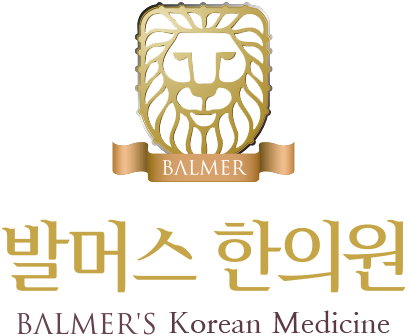To be
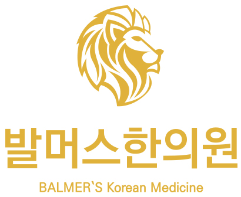Basic Logo
English Logo
Moon Logo
Shield Logo
As is
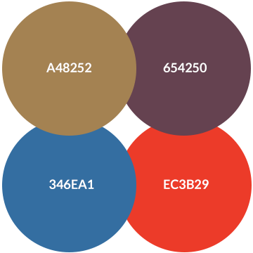To be
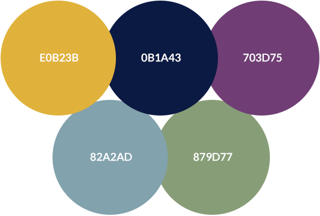소아·청소년 전용 캐릭터 개발
소아·청소년 페이지 및 광고에서 활용할 수 있는 발머스 전용 어린이사자 캐릭터를 개발했습니다.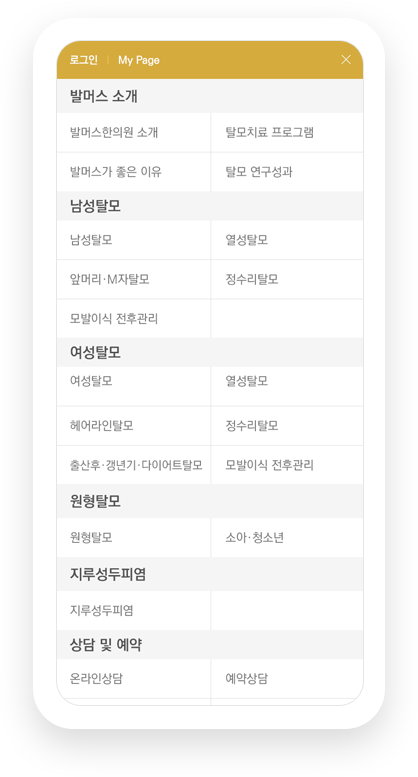
PC에서 제공하는 정보를 모바일에서도 동일하게 제공합니다. 기존의 모바일 홈페이지는 PC와 분리되어 있었기 때문에 업데이트하기 어려웠고, 이에 따라 사용자가 확인할 수 있는 정보가 한정적이었습니다. 반응형으로 제작된 이번 신규 홈페이지는 모바일에서도 최적화된 서비스를 제공합니다.
인트로 페이지를 통해 질환 페이지로 바로 진입할 수 있게 했습니다. 많은 정보가 담겨있던 만큼 복잡했던 메인 화면을 없애 이탈률을 낮추고자 했습니다.
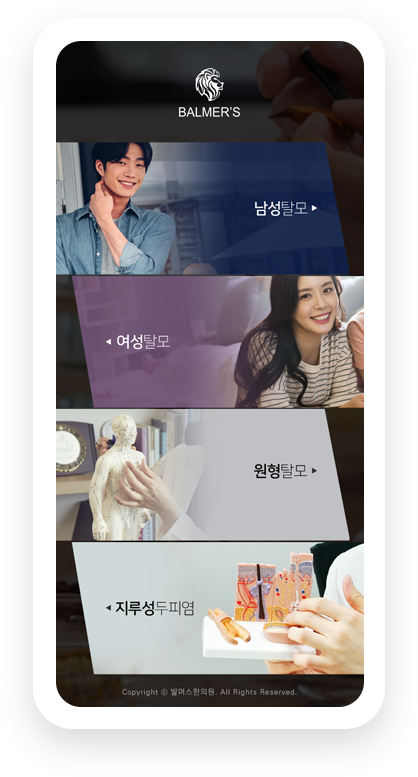
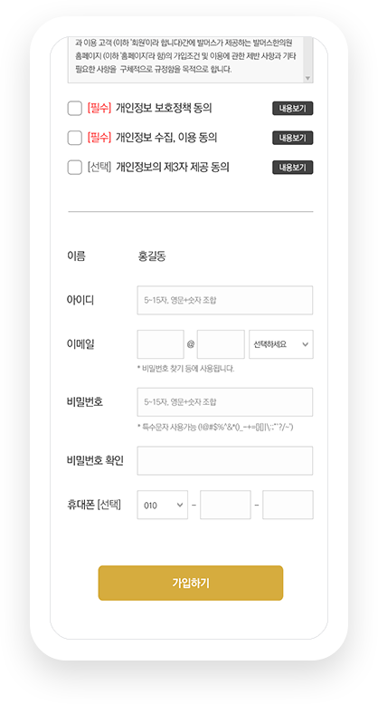
회원가입을 간소화했습니다. 회원가입시 기재해야 하는 항목의 수를 줄여 진입장벽을 낮췄습니다.
모든 질환페이지 하단에
예약상담 탭을 추가했습니다.
각 페이지에서 설득이 완료된 후에 추가 액션 없이
바로 예약신청을 할 수 있도록 컨텐츠 구성했습니다.
퀵메뉴를 통해 주요정보를
빠르게 확인할 수 있게 했습니다.
지점안내, 치료전후사진, 탈모치료후기, 예약상담,
대표번호를 퀵메뉴로 노출시켜 편의성을 높였습니다.
성별에 따른 질환 페이지를
제작했습니다.
기존에는 공통 페이지 URL을 광고에 연결했다면
앞으로는 성별 질환 페이지를 사용하여 컨텐츠
정확도가 높아지게 됩니다. 예를 들어, 네이버에서
‘여성 정수리탈모’를 검색하여 파워링크를 클릭하면
‘여성 정수리탈모’ 페이지로 이동합니다.
세련된 이미지 전달을 위해 제품 촬영을 새로 진행 했습니다. 탕약, 침, 외용제, MTS, 도서 등의 스튜디오 촬영을 진행하여 홈페이지 이미지 퀄리티를 높였습니다.
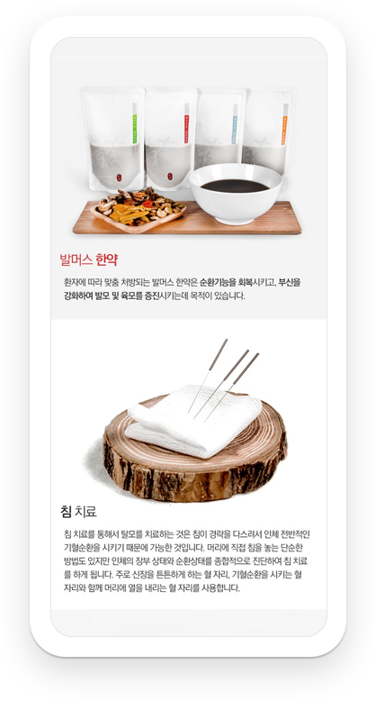
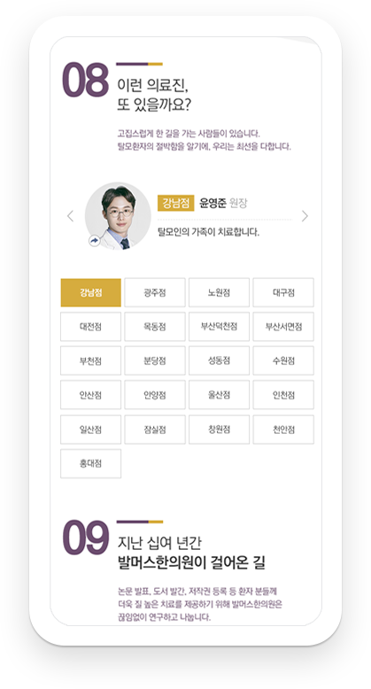
의료진의 진정성을 보여주었습니다. 모든 질환페이지에 의료진별 한 줄 철학을 넣어 치료의 진정성을 느낄 수 있게 했습니다.
공감,감성 카피를 통해 메세지를 전달합니다. 감성소구로 발머스 치료의 진정성을 느낄 수 있도록 했습니다.
치료효과를 보다
드라마틱하게
느낄 수 있게 했습니다.
질환페이지는 물론, 치료전후사진 페이지에서
사진의 사이즈를 확 키웠습니다.
썸네일 사이즈 변화 : 170*135px → 300*220px
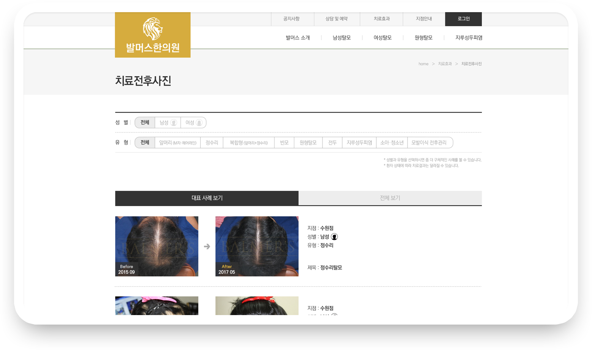
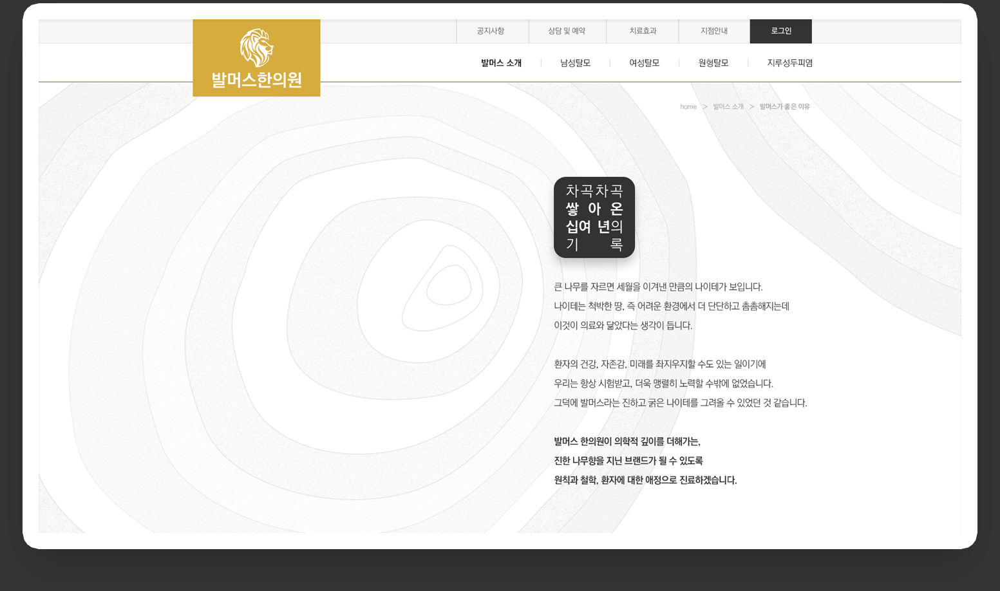
트렌디하고 동적인
느낌을 주는 인터랙션 효과를
곳곳에 적용했습니다.
홈페이지에 생기를 불어넣어
사용자의 흥미를 유발합니다.
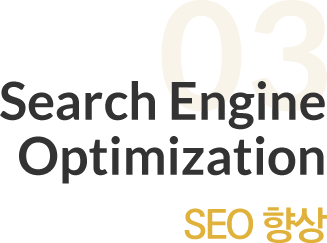 SEO 향상으로 홈페이지 유입을 높이고자 했습니다. XE를 걷어내고 하드코딩으로 개발하여 SEO를 향상시켰습니다. 또한 Footer에도 모든 질환명을 포함시켰으며 페이지 네임에 게시판 글 제목이 자동으로 추출되게 하는 등 디테일한 업그레이드가 진행되었습니다.
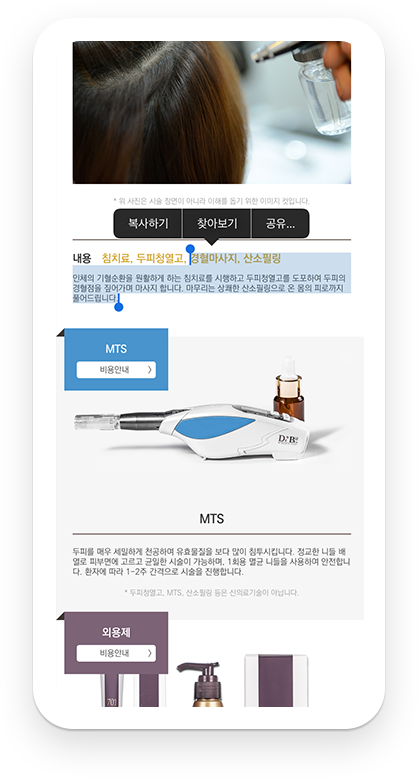
데이터 기반으로 업데이트 되는 홈페이지
정확한 데이터 분석을 통해 지속적으로 사용자 편의성을 강화시킬 예정입니다.